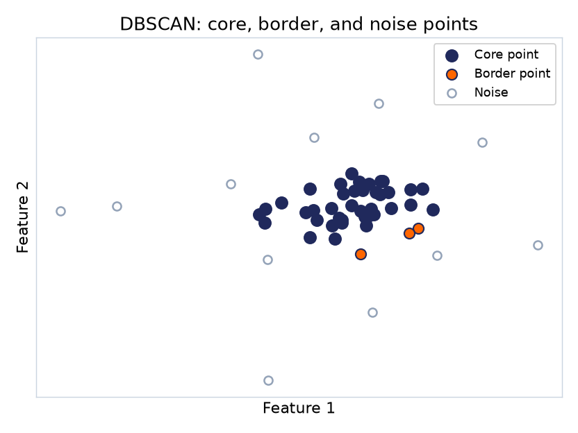
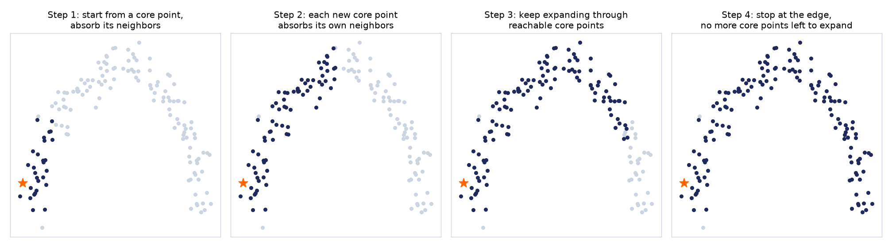
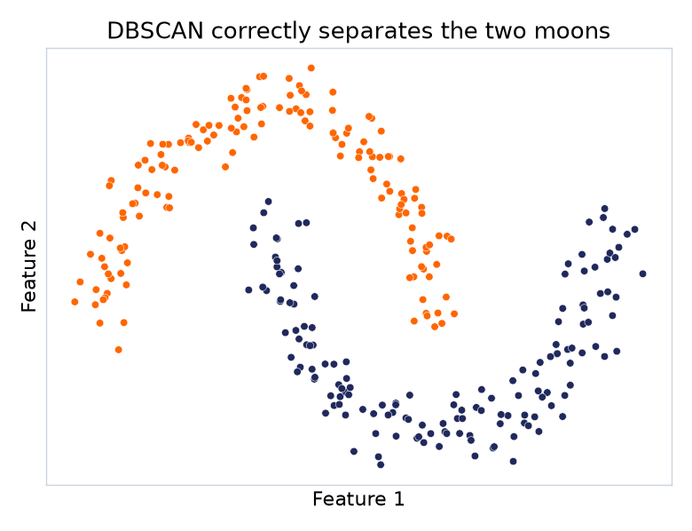
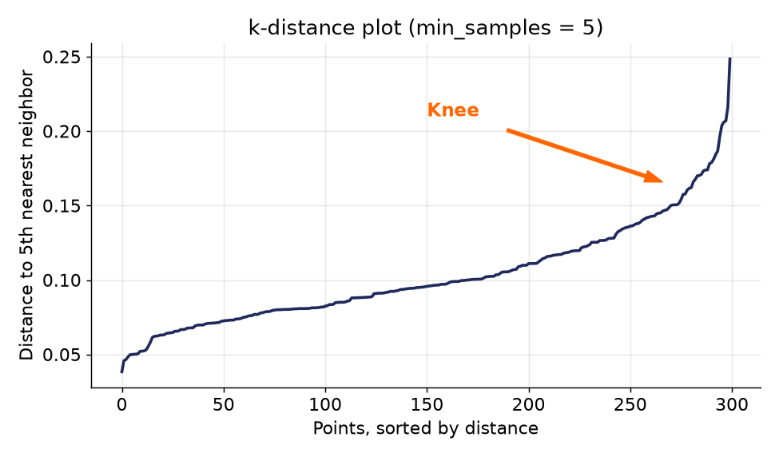
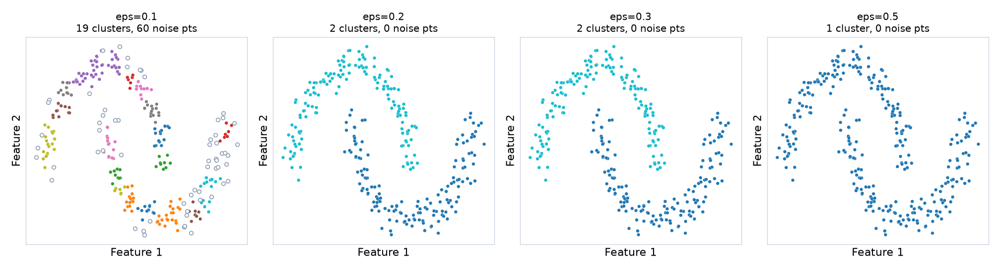
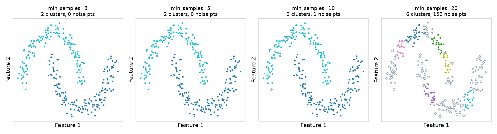

اگر بهجای دنبالکردن مرکز خوشه، دنبال مناطق متراکم داده باشیم چه؟
DBSCAN (خوشهبندی فضایی مبتنی بر چگالی): نقاطی که در یک ناحیه تراکم بالایی دارند، یک خوشه تشکیل میدهند.
مفاهیم پایه
دو پارامتر اصلی
eps
شعاع همسایگی: دو نقطه همسایهاند اگر فاصلهشان کمتر یا مساوی eps باشد.
min_samples
حداقل تعداد نقاطی که باید در شعاع eps یک نقطه باشند تا آن ناحیه «متراکم» بهحساب بیاید.
دو نکتهی ریز ولی مهم: فاصلهی دقیقاً برابر eps هم همسایه حساب میشود، و در scikit-learn هنگام شمارش، خود نقطه هم جزو همسایههایش حساب میشود.
سه نوع نقطه
Core, Border, Noise
Core Point
حداقل min_samples همسایه در شعاع eps خودش دارد (خودش را هم حساب میکنیم).
Border Point
خودش تراکم کافی ندارد، اما حداقل یک Core Point در شعاع eps آن هست.
Noise
نه Core است نه Border؛ عضو هیچ خوشهای نیست. برچسب -1.

مثال دستی ۱ · همان دادهی نوتبوک
۹ نقطه، با eps = 0.35 و min_samples = 4
نقطه
x
y
P0
0.00
0.00
P1
0.20
0.10
P2
0.10
−0.20
P3
−0.10
0.15
P4
0.15
−0.10
P5
−0.15
−0.05
P6
0.42
0.32
P7
3.00
3.00
P8
−3.00
−3.00
دایرهها: شعاع eps دور P1 و P6
سؤال برای کلاس، قبل از هر محاسبهای: به نظرتان کدام نقطهها Core، کدام Border و کدام Noise میشوند؟
مثال دستی ۱ · قدم دوم
جدول فاصلهها و شمارش همسایهها
خانههای نارنجی یعنی فاصلهی آن دو نقطه از eps=0.35 کمتر یا مساوی است (قطر جدول یعنی خود نقطه). تعداد خانههای نارنجی هر ردیف، تعداد همسایههای همان نقطه است.
P0
P1
P2
P3
P4
P5
P6
P7
P8
|N|
P0
0
0.224
0.224
0.180
0.180
0.158
0.528
4.243
4.243
6
P1
0.224
0
0.316
0.304
0.206
0.381
0.311
4.031
4.455
6
P2
0.224
0.316
0
0.403
0.112
0.292
0.611
4.319
4.177
5
P3
0.180
0.304
0.403
0
0.354
0.206
0.547
4.211
4.282
4
P4
0.180
0.206
0.112
0.354
0
0.304
0.499
4.211
4.282
5
P5
0.158
0.381
0.292
0.206
0.304
0
0.680
4.385
4.102
5
P6
0.528
0.311
0.611
0.547
0.499
0.680
0
3.720
4.766
2
P7
4.243
4.031
4.319
4.211
4.211
4.385
3.720
0
8.485
1
P8
4.243
4.455
4.177
4.282
4.282
4.102
4.766
8.485
0
1
مثلاً ردیف P6: فقط خودش و P1 (با فاصلهی ۰.۳۱۱) داخل شعاعاند؛ یعنی ۲ همسایه. خانهی قرمز همان ۰.۳۵۴ است: فقط کمی بیشتر از eps، پس همسایه حساب نمیشود.
مثال دستی ۱ · جمعبندی
نتیجهی نهایی این مثال
یک خوشه، هفت نقطه P0 تا P5 شش Core Pointاند؛ P6 با وجود کمبود همسایه، چون در شعاع یک Core Point (P1) است، Border همین خوشه میشود.
نویز، دو نقطه P7 و P8 نه خودشان Coreاند و نه هیچ Coreای در همسایگیشان هست؛ برچسب -1 میگیرند.
الگوریتم
DBSCAN دقیقاً چه کار میکند؟
۱همسایهیابی: برای هر نقطه، فاصلهاش تا بقیهی نقاط را حساب کن و ببین چند نقطه (بهعلاوهی خودش) در شعاع eps آن هستند.
۲شروع خوشه: یک Core Point بدون خوشه انتخاب کن (یعنی بهاندازهی min_samples همسایه دارد)، یک خوشهی جدید بساز، و همسایههایش را به صف اضافه کن.
۳گسترش: نقاط صف را یکییکی به خوشه اضافه کن؛ اگر خودشان هم Core بودند، همسایههایشان را هم به صف اضافه کن، وگرنه (Border) گسترش را همانجا متوقف کن.
۴تکرار و پایان: سراغ Core Point بعدیِ بیخوشه برو. وقتی دیگر Core بیخوشهای نماند، هر نقطهای که به هیچ خوشهای نرسید، Noise است (-1).
همین فرایند، روی دادهی بیشتر
یک خوشه چطور رشد میکند؟
DBSCAN برخلاف K-Means هیچ ناحیهای را از قبل برای کل داده مشخص نمیکند؛ از یک Core Point شروع میکند و قدمبهقدم گسترش پیدا میکند.

از یک Core Point (ستاره) شروع میشود؛ همسایههای آن اضافه میشوند، هر Core Point جدید همسایههای خودش را هم اضافه میکند، و همینطور ادامه پیدا میکند تا دیگر Core Point جدیدی برای گسترش نماند.
همان مثالی که K-Means شکست خورد
DBSCAN روی دادهی دو هلال

اینبار بهجای فاصله تا یک مرکز، الگوریتم دنبال نواحی متراکم و پیوسته گشته؛ دقیقاً همینطور که هر هلال واقعاً شکل گرفته است.
یک راه اصولیتر
انتخاب eps با نمودار k-distance
بهجای فقط آزمونوخطا، یک روش رایج هم هست: برای هر نمونه، فاصله تا همان تعداداُمین همسایهی نزدیک (برابر با min_samples، اینجا پنجم) را حساب میکنیم، این فاصلهها را مرتب میکنیم، و دنبال نقطهی خمیدگی (Knee) میگردیم؛ دقیقاً همان منطق Elbow Method که برای K-Means دیدیم.

قبل از نقطهی خمیدگی، فاصلهها آرام رشد میکنند (نواحی متراکم)؛ بعد از آن، بهشدت افزایش پیدا میکنند (شروع نواحی پراکنده). مقدار eps را همانجا، حدود ۰.۱۵ تا ۰.۲، انتخاب میکنیم؛ دقیقاً همان بازهای که با آزمونوخطا هم به آن رسیدیم.
Hands-on
تأثیر eps روی نتیجه

هدف حفظکردن یک عدد دقیق نیست؛ هدف دیدن این است که پارامترهای خوشهبندی میتوانند ساختارهای کاملاً متفاوتی از همان داده کشف کنند.
Hands-on
تأثیر min_samples روی نتیجه
eps را همان ۰.۲ ثابت نگه میداریم و فقط min_samples را زیاد میکنیم؛ یعنی سختگیرتر میشویم که یک ناحیه «متراکم» بهحساب بیاید.

با min_samples کم، تقریباً همهچیز در دو خوشه جای میگیرد. هرچه min_samples را بیشتر کنیم، نقاط بیشتری دیگر «بهاندازهی کافی همسایه» ندارند و نویز میشوند؛ با min_samples=20 حتی خود خوشهها هم تکهتکه میشوند.
چرا اینقدر اهمیت دارد
DBSCAN در عمل کجا استفاده میشود؟
تشخیص ناهنجاری
چون نویز بهطور طبیعی تشخیص داده میشود، تراکنشهای مشکوک یا رفتار غیرعادی کاربر دقیقاً همان نقاط «نویز» الگوریتم هستند.
خوشهبندی جغرافیایی
برای گروهبندی نقاط مکانی (مثلاً محل تصادفات یا فروشگاهها) که شکل طبیعی و نامنظمی دارند، نه لزوماً دایرهای.
بخشبندی تصویر
پیکسلهای نزدیک به هم با رنگ مشابه، بدون دانستن تعداد بخشها از قبل، در یک ناحیه گروه میشوند.
جمعبندی الگوریتم
نقاط قوت و ضعف DBSCAN
نقاط قوت
نیازی به مشخصکردن تعداد خوشه از قبل ندارد.
میتواند خوشههایی با شکل کاملاً دلخواه (نه فقط گرد) را پیدا کند.
نویز و نقاط پرت را بهطور خودکار تشخیص میدهد.
نقاط ضعف
وقتی تراکم خوشههای مختلف خیلی متفاوت باشد، یک eps مشترک جواب نمیدهد.
پیدا کردن eps و min_samples مناسب معمولاً نیاز به آزمونوخطا دارد.
درست مثل K-Means، به مقیاس ویژگیها حساس است.
یک نکتهی مهم
DBSCAN هم جادویی نیست.
اگر تراکم خوشههای مختلف در یک دیتاست خیلی متفاوت باشد، پیدا کردن یک eps مشترک که برای همهی خوشهها خوب کار کند، خودش میتواند مشکلساز شود.